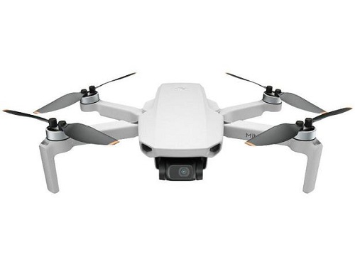
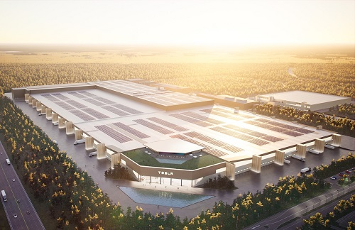

Drone sobre a fábrica da Tesla
Ínicio de uma era!
Eu e meu amigo "Joe Tegtmeyer" sempre tivemos a curiosidade de como seria o calibre de uma empresa de automóveis. Uma ideia brilhante surgiu na minha cabeça - "Porque não gravar a nova fábrica da Tesla pela nossa viagem à Alemanha?" - Logo pensei.
Resultado: Lindas imagens de um fururo próximo e próspero.
Segue o link da notícia aqui.
.png)
Um pouco da hístoria da Tesla
A Tesla teve sua origem em 2003, em São Franscisco, Califórnia, quando um grupo de engenheiros visionários, incluindo o renomado empresário Elon Musk, se reuniram para mostrarem ao mundo que era possível projetar e fabricar veículos totalmente elétricos. Apesar a atuação principal da empresa esteja direcionada na fabricação e distribuição de automóveis eletétricos, com a Tesla Motors, a companhia também atua em projetos de sustentabilidade envolvendo armazenamento de energia e a confecção de painéis solares, bem como na comercialização de componentes elétricos como baterias industriais de lítio-íon. Os principais objetivos da Tesla são os de ampliar e melhorar os métodos de geração e armazenamento de energia existentes e oferecer cada vez mais produtos e veículos de alta performance que viabilizem a produção de energia limpa. - Texto por Canaltech.
Voltar